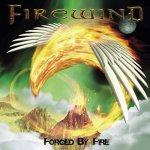

|
|
||
Firewind : Forged by Fire (2005) |
|

http://www.firewind.gr |
1. Kill to Live 3:41 |
8/10 |
|
A pesar del renombre adquirido en el grupo Dream Evil, el guitarrista griego Kostas Karamitroudis (más conocido como Gus G) ha decidido centrarse en su propia banda, Firewind, con los que ha lanzado su tercer álbum, llamado Forged by Fire. Los ármonicos forzados que abren "Kill to Live" dicen a las claras que nos encontramos ante un disco de heavy metal guitarrero, con un primer tema potente y de sonido clásico. El doble bombo mantiene altas las pulsaciones en "Beware the Beast", tema al que ni los cambios de ritmo consiguen librar de una cierta monotonía. Mucho mejor se presenta el siguiente, "Tyranny", rápido y de estribillo muy pegadizo, sin duda el mejor del álbum. "The forgotten memory" es otra pieza cimentada en el doble bombo, aunque de estribillo melódico y pausado, dualidad que se encuentra también en el solo de guitarra, con dos partes muy distintas. "Hate world hero" es una balada emocionante, sobre todo en el pegadizo estribillo y tiene un impecable solo de guitarra. El doble bombo reaparece en "Escape from tomorrow", que de nuevo ofrece cambios de ritmo y de atmósfera, para mantener la variedad y el interés. "Feast of the Savages" es una canción instrumental, con la melodía principal a cargo de la guitarra, con algunas secciones realmente frenéticas pero a la que le falta un claro hilo conductor pues resulta a veces un tanto caótica. El comienzo de "Burn in Hell" suena mucho a metal industrial, estilo White Zombie por ejemplo, aunque pronto se encauza por vías más clásicas sin llegar a destacar. La novena pista, "Perished in Flames", es un medio tiempo, con cierto aire de hard rock que se hace más obvio en el estribillo, aunque la última parte es más rápida y metalera. Completa el disco "Land of Eternity", otra interesante balada con un estribillo escalofriante y un solo de guitarra con guiños al hard rock más melódico. Gus G es un virtuoso de la guitarra y eso cala en este trabajo: la guitarra ofrece pequeñas variaciones entre estrofas y los solos son rápidos y cuentan con recursos variados, aunque no resultan especialmente originales. No he escuchado los discos anteriores así que no puedo comparar, pero desde luego el nuevo cantante, Chitty Somapala, hace muy bien su trabajo, tanto en las partes más duras, como en las baladas. Y si sumamos a esto que aunque el estilo es más que conocido, este disco tiene varios temas buenos y uno muy bueno ("Tyranny"), tengo que darle una nota media-alta. No va a ser el mejor disco de power metal del año, pero gustará a bastante gente. |
||
- Crítica escrita por Rubén Béjar - |
||